Modpack Author: dreams01
Origin: Modpack Link
Versions: MC = 1.12.2 - Pack = 1.53
Presentation
Fate led me to try out another adventure pack, it’s a name I’ve seen quite a fair bit so this is fairly exciting to finally see what it is about!
It’s a fairly demanding pack, and it made me search and change my starting java arguments to improve the bottlenecked performance - here are them if you ever need for any reason.
-XX:+UseG1GC -Xmx8G -Xms8G -Dsun.rmi.dgc.server.gcInterval=2147483646 -XX:+UnlockExperimentalVMOptions -XX:G1NewSizePercent=20 -XX:G1ReservePercent=20 -XX:MaxGCPauseMillis=50 -XX:G1HeapRegionSize=32M
Overview
Sorting Out Plans
I appear in a peaceful field, and take an entire day sifting through my starting items and quests - thankfully you’re given a starting home kit. There’s a thousand things to handle at once at the start, so I begin with the simplest: plant stuff. A weird inventory rollback bug keeps happening, but it seems like opening the baubles/another inventory avoids it.
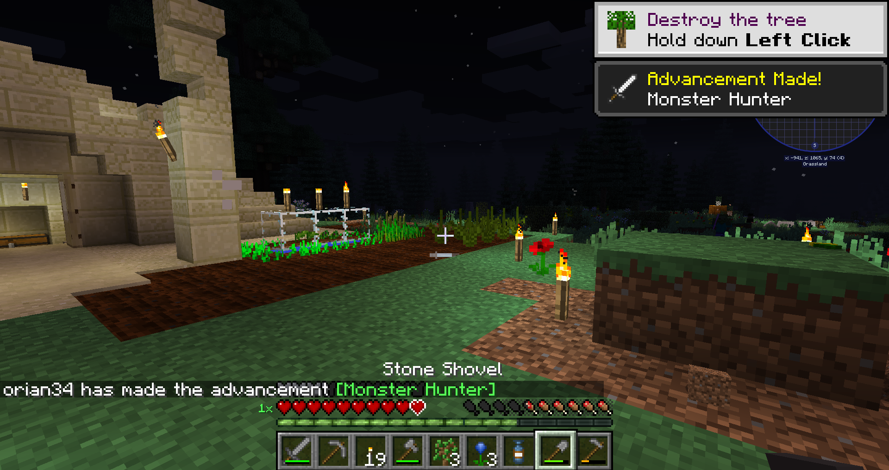
Meanwhile the quests are very generous in level rewards, meaning I already have a substantial amount of passives from the levels mod. Barely keeping up with my inventory, my next step is getting a backpack, which isn’t hard due to getting leather from ground traps and loads of silk from a silkworm.
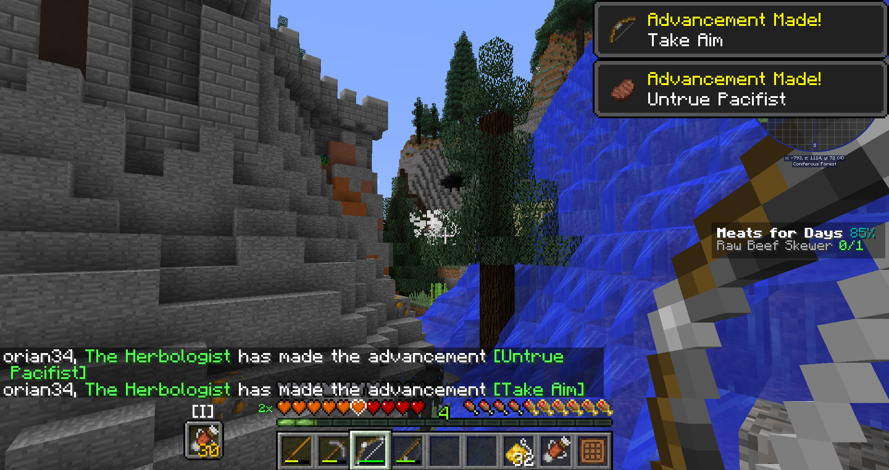
Still having trouble keeping up with all the open tabs, I’ll have to progress slowly and soon find global inventory management solutions. There doesn’t seem to be many options, so I first settle with a colossal wooden chest until I have more resources.
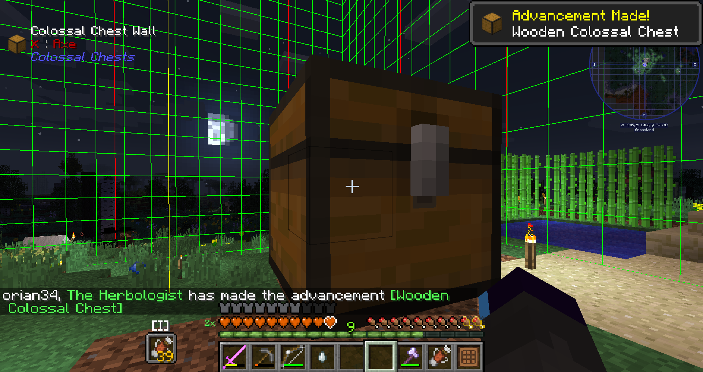
For that purpose, I do several expeditions at the bottom of my mineshaft and come back with a varied and plentiful amount of ores. Those expeditions are also the good time to obtain a high amount of obsidian and initiate thaumcraft by collecting some crystals - I even found two crate stashes.
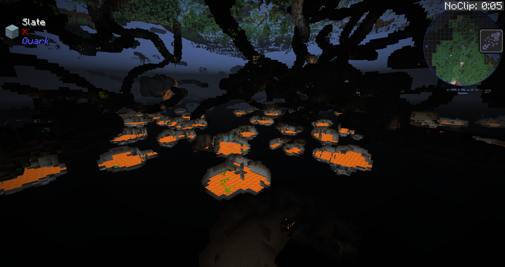
A Seedy Place?
I progress a bit then I look into mystical agriculture seeds to make it easier on the crafting. I got some shards so I can begin, but I have so little inferium essence, I have to grow higher tiers of seeds first. This has to be the first time I’m really limited in this mod’s progression, but that’s pretty fun in a way.
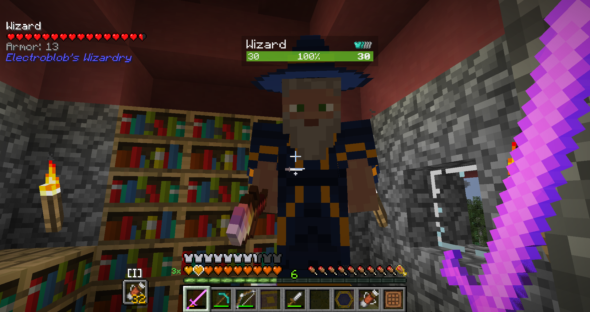
To improve my mystical yield, I have to progress in roots a bit, and for that I need moss which means exploring more. It’s really not hard to obtain and I make a handful of elemental soils - seed duplication here I come! While waiting for my inferium seed to grow, I go mine into the cavern dimension because I need lapis and quartz for simple storage.
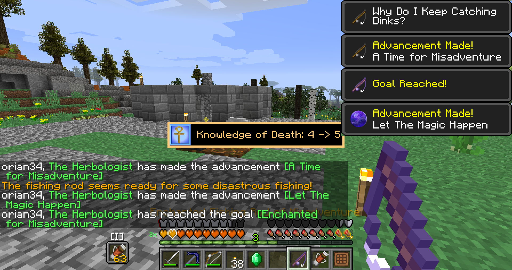
The loot is abundant, and I even obtain a tree of time to boost crops more! I gathered enough materials to make the storage controller, it is time to finally centralize for access! Except that by now, you should know I’m a master at getting sidetracked… and I decided I absolutely needed to get glowstone first to make the knowledge scroll for storing my levels safely. This endeavor led me to a prolongated expedition, finding various useful things but nothing that really matters beyond the one glowstone in a far away village (which I didn’t even get to explore because I was full).
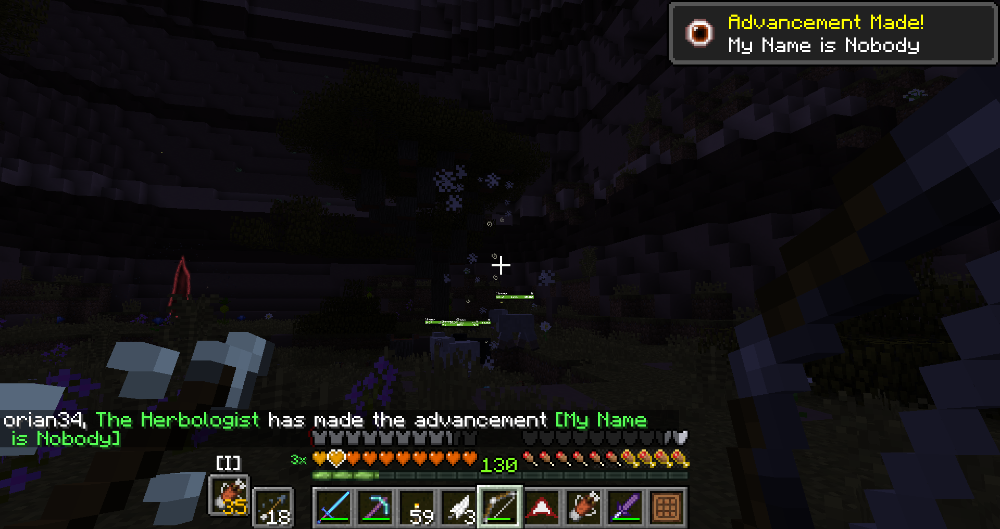
Now that I have the precious scroll, I should explain more why it was so important: quests give out levels, not xp in amounts. Meaning that the higher your level is, the more xp you gain from redeeming a quest, and conversely the level up mod only uses 5 levels for each skill point. There is a weak point to exploit here by using the scroll and the experience book who stores xp in amounts, by stockpiling levels and absorbing all the quests then when it’s time to spend some you store it all away except the puny amount of the book, which trickles exactly as needed to level up or enchant by spending little before grabbing back the scroll. Truth is, I wouldn’t have needed to do these shenanigans if one quest didn’t force me into it; I’m supposed to make a filled demonic barrel of experience - that means 65 million experience, no other sane option but to exploit the level rewards.
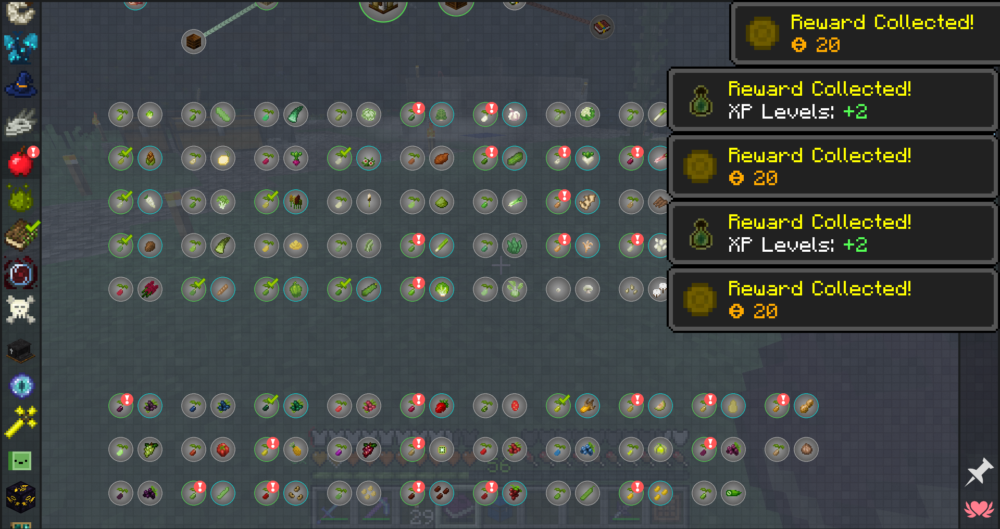
Farm and Fortune
Once this is done, I go into the nether… yeah I could’ve done that to begin with for the glowstone, but oh well, it was a good excuse to explore a bit. I don’t stay too long, mostly to grab nether bricks so I can make the demon ingots, then I come back and finally am back to the initial goal of having my better storage! I still setup my mystical and pam’s farm to full throttle with elemental soil first, then hook it all up to my colossal chest with a remote to access it all easily.
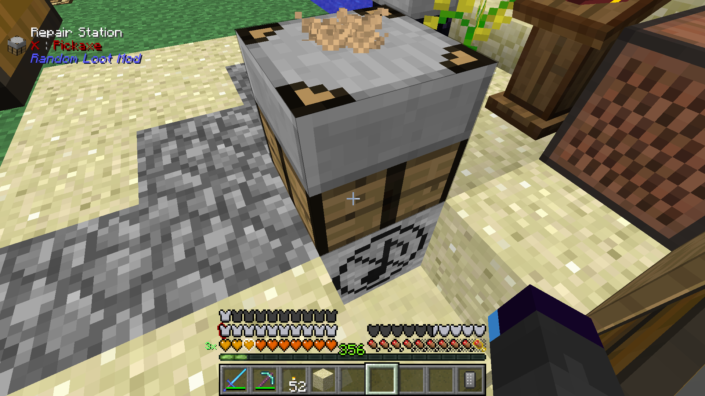
A new era begins by figuring out the issues that were plaguing me since the start, meaning no more lag and fixing some quests not yet updated. This weight gone, I need automation to handle some of the honestly gigantic end goals, and for that purpose build a bigger colossal iron chest with the roof filled by hopper pots! With this solid system, I spend a lot of time making more seeds and tending the crops, while doing some expeditions when essence needs to be replenished.
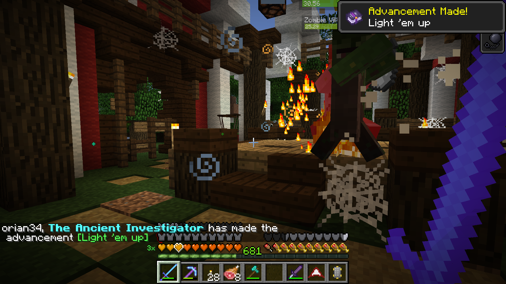
I find some strange things during my explorations, and after all this time I find a spectre coil, the graal of RF. I can now overhaul my crops with a faster and more efficient harvesting, and while waiting for some pam’s crops to finish I make some diamond armory to clear quests. The rewards of said quests ends up being insane, including a second spectre coil, a mega loot ring and 13 nether stars! The ring gives resistance for free, and after some research I upgrade it to also provide speed, this is so strong.
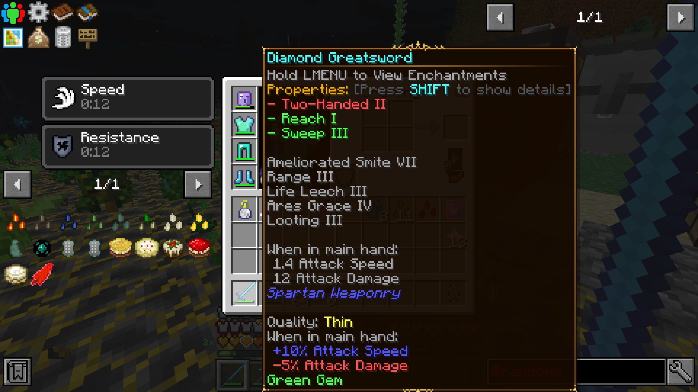
I spent some extra time boosting my gear as well and the crops have calmed down quite a bit, I mostly need to increase them in numbers so that’s most of the intense production being handled - adventure awaits, huzzah! I begin by an expedition in the nether to gather the remaining blaze and wither skeleton chunks, along some extra treasures, and locating the queen ghast altar.
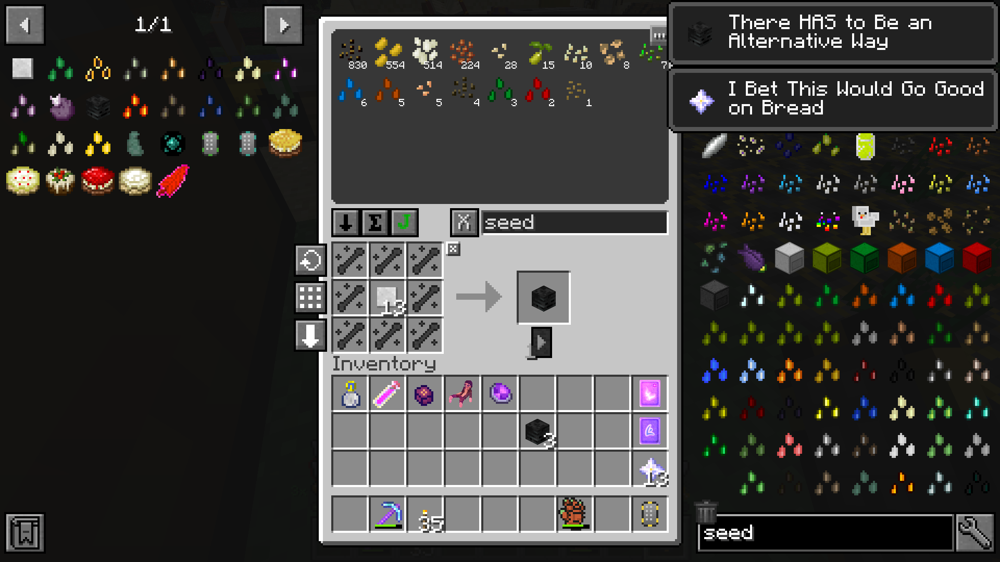
Dragon Warp
After replacing some of the fruit trees, I find myself quite free to go on a longer exploration, but first I want to look at the dimensional door nearby. It’s a cute and short experience, and I decide to jump into the limbo, forgetting that when leaving the dimension you can end up anywhere…
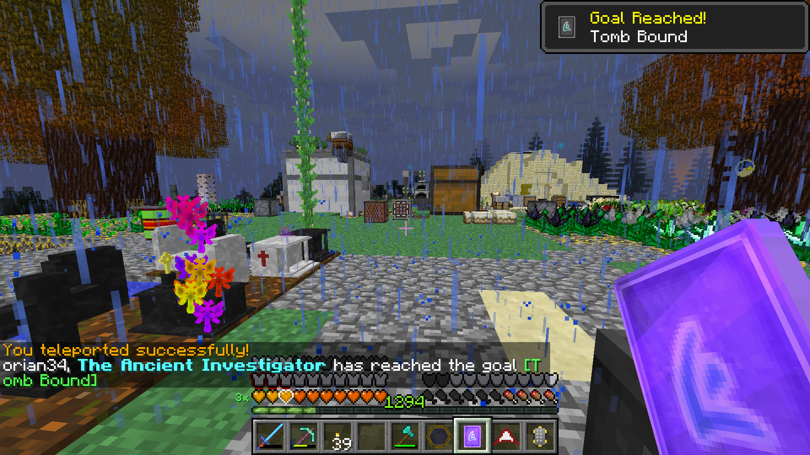
And that anywhere is face to face with a dragon! I forgot they were in this world, not seeing any for so long, thankfully I’m more than strong enough to crush him. Noticing a myrmex colony a few blocks next to the nest, I venture deeper when the ground crumbles and I get assaulted by a much bigger dragon!!! There was another nest right under the tunnel, and the dragon got lured by my presence.
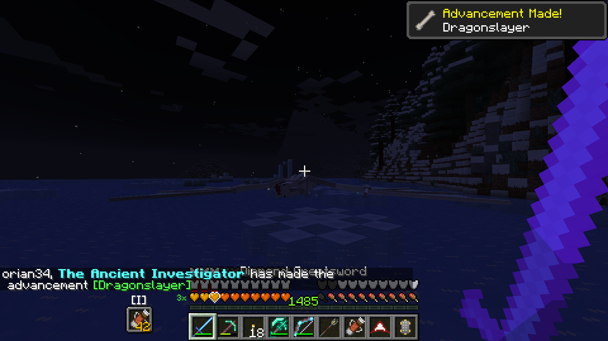
Although being in a terrifying situation, my bow dealt enough damage that I wasn’t in danger. Looting the nest yielded a meagre bounty; a handful of gear, but also 2 weezers out of the 10 needed. Very good in the end, along the last stand X enchants. Leaving the place, I find a frozen lake town with usual waystones and points, which make me understand I can easily travel all around through signposts, but also that I forgot the waystone gem doesn’t cost levels…
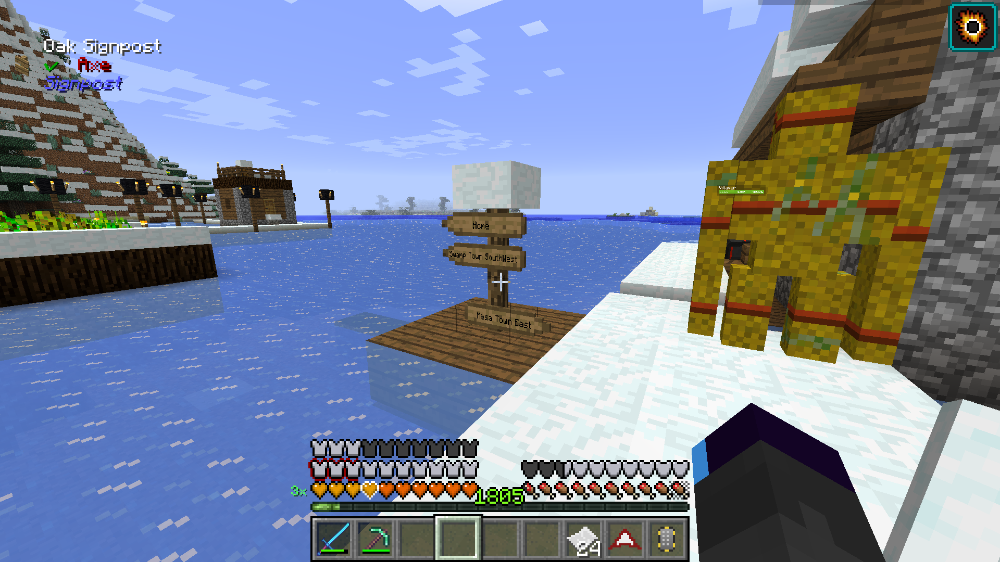
Coming back home with a very large bounty, notably of dragon remains and maps from a cartographer, it’ll take some time to sort out my gear and prepare for longer travel. I switch to ice dragon equipment, and play around with signposts near the 3 villages I managed to find, this is very useful for free instant travel. I use that time while waiting for souls to clear out some dimensional door gates and find some very nice loot.
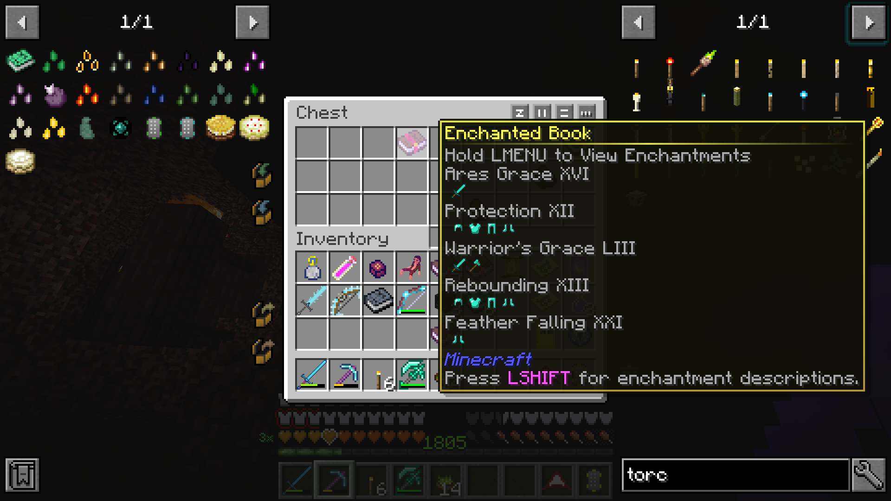
Juggernaut
Back home, there are a lot of things to work on, I begin with relocating the fishing pool then completely rework my enchantments since I learned the cost didn’t increase so you can stockpile enchants freely! Now that I’m quite cracked, I go on another exploration spree and get more goodies, then back at home I splurge in the shop to get epic boxes and guess what? I obtain a super chestplate that has a built-in unlimited jetpack!
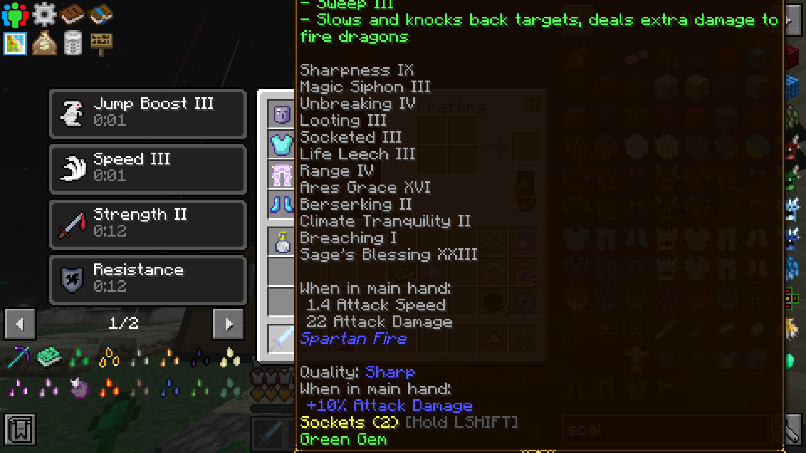
That requires more reworking of my gear, but it’s very worth the effort. While waiting for souls I grow the cockatrices I got from my egg farm - the plan is to use the familiar receptacle to resurrect the cockatrice and increase the kill count to 75 without effort! That was the plan, at least, but you can’t hurt your babies it seems. Instead I make the ocelot pet to get night vision and finish changing up all my enchanted gear, I’m now almost fully ready!
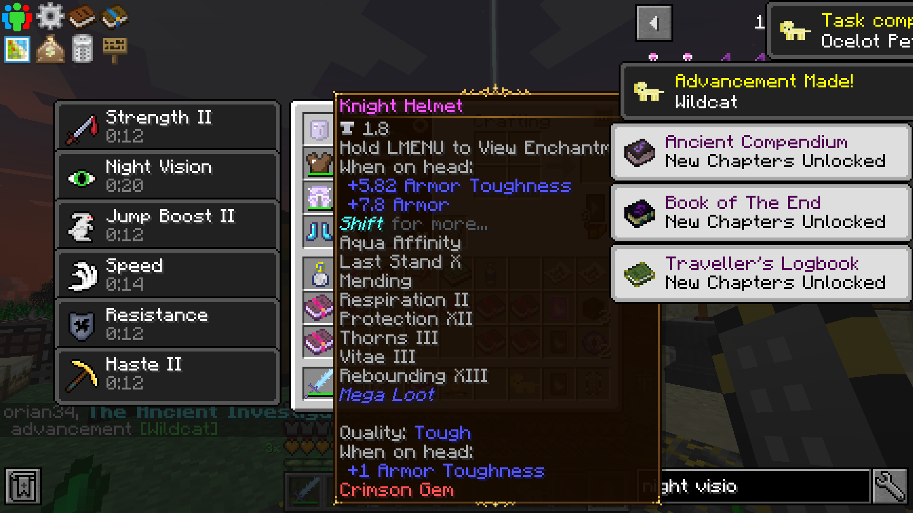
I use a capsule that had chorus flowers to bypass the need of going to the end and get the dimensional remote, finally full access everywhere! Now that I got magic siphon on my sword, I can steal the buffs I’m missing, benefiting from the harder mobs to get infinite duration effects. I then go dig into the cavern dimensions and find what has to be the best mob hunting grounds, this is great!
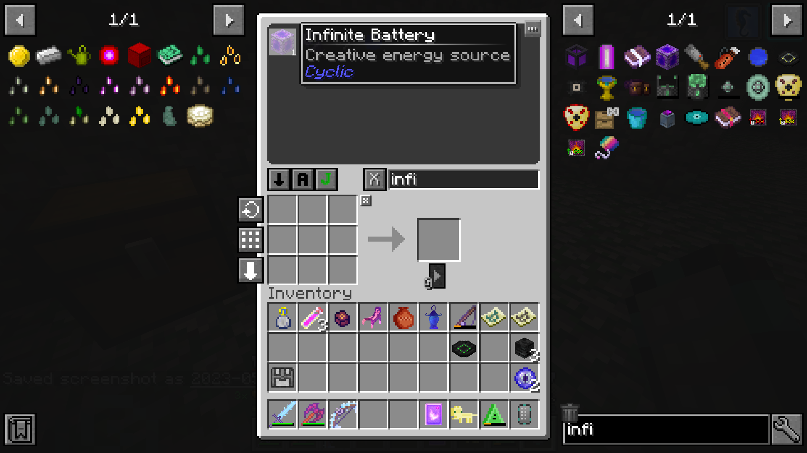
To empty my inventory, I quickly kill off the wither who became a joke with my gear, then I go explore a ton more following my temple maps. On the path, I find a big desert surrounded by a savannah edge, meaning I get to increase my kill count for numerous creatures like cockatrices and cyclops. I get sidetracked a bit by getting friendly with a myrmex colony and grabbing a lot of queen eggs - hopefully the strategy will work this time…
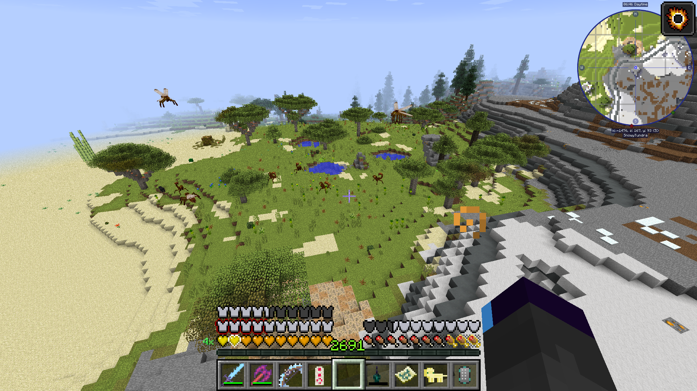
Alright, you might have noticed it already, but the last chapters were pretty much the same loop of exploration and tweaking stuff at the base - now I don’t even need to upgrade my gear anymore either. I’ve been reconsidering how doable some of the quests are, and at this point until the end of the pack it would be steamroll exploring to grind some numbers. I have to value my time more, and I don’t think this is beneficial for me to continue.
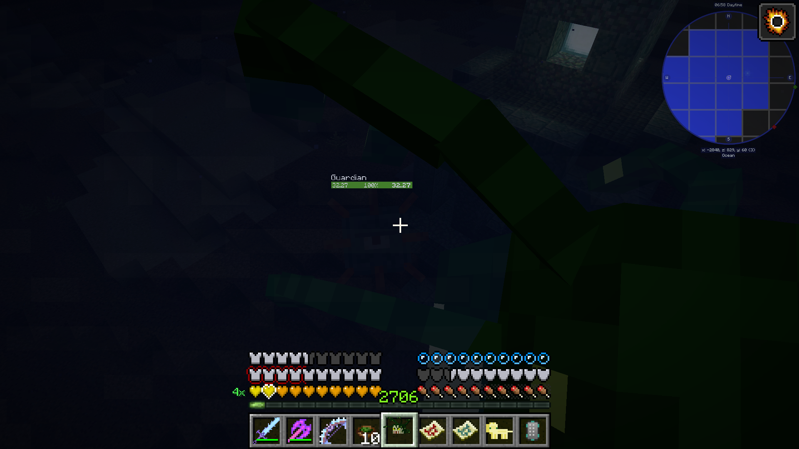
Conclusion
It’s a bit of an anticlimactic end, but it was necessary after I came to the realisation that the pack wasn’t for me.
I enjoyed the drive to remove most automation and technology, leaving full range to be exploring and adventuring. It had so many mods, but they were far from necessary; the progression ending up way too open, and not really making use of the huge variety possible.
It seems like it would be fun for a server where people hang out, but for a quester it’s not as interesting. Once my gear reaches the tier of immortal, it’s a plateau.
Clearly it wasn’t what I expected, I learned a good lesson to be more attentive to what the pack is about before starting, so it was still an important experience to be had!
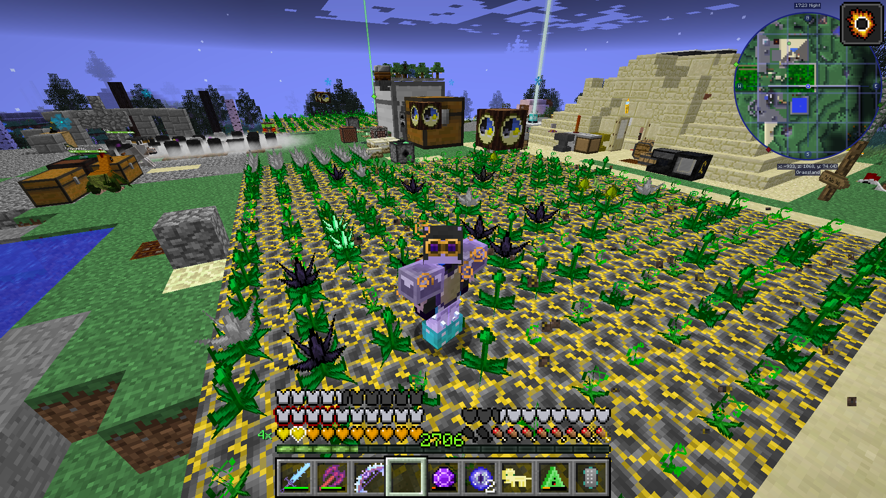